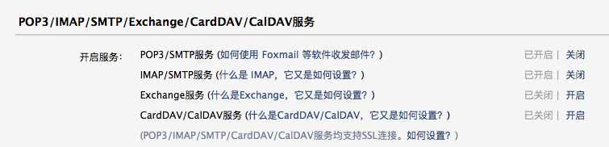
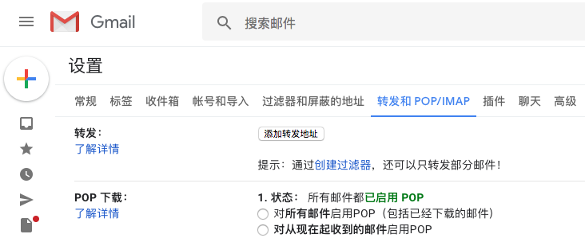
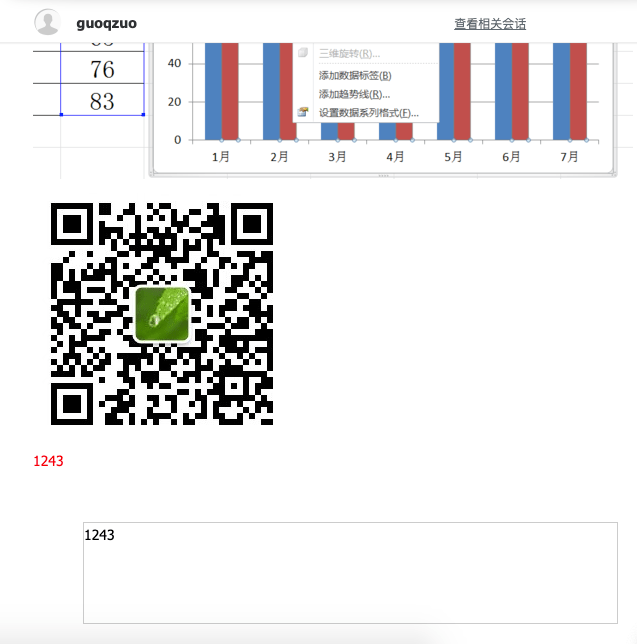
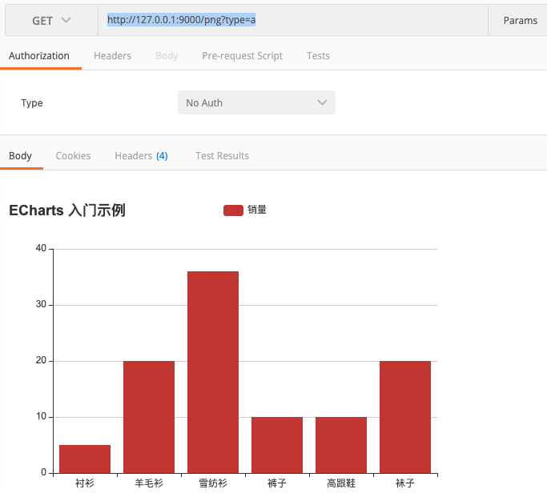

用node实现发送包含echarts图表的邮件
这篇文章发布于 2020/10/08，归类于 前端工程化
标签：
node发邮件，node发送图表邮件，node发送echart图表邮件
在之前我用node研究过怎么收发邮件，但没有研究过邮件里面是否能包含图表，这次来研究下
首先，我们来看看怎么发邮件
准备工作：配置发件人邮箱
我们发送邮件，首先需要有一个邮箱作为发件人，以QQ邮箱为例，我们发邮件使用 916707888@qq.com 作为发件人，我们需要使用程序自动发邮件，所以需要配置发邮件的服务，开启发邮件的POP3/SMTP服务，得到授权码在操作，下面来看看具体过程
登录到qq邮箱，进入管理页面，在设置 - POP3/IMAP/SMTP/Exchange/CardDAV/CalDAV服务位置，开启POP3/SMTP服务
开启服务后，会得到POP3和IMAP授权码，一个用来收邮件一个用来发邮件，保存好

gmail邮箱配置

使用nodemailer来发送邮件
使用 nodemailer 来发送邮件，首先开一个koa demo
const Koa = require('koa')
const Router = require('koa-router')
const app = new Koa()
const router = new Router()
/**
* @description 使用nodemailer发送邮件
* @example
* POST http://127.0.0.1:9000/sendEmail
*/
router.get('/sendEmail', async ctx => {
try {
let sendEmail = require('./sendEmail/index.js')
await sendEmail()
ctx.body = {
msg: '成功'
}
} catch (e) {
ctx.body = {
msg: e.message
}
}
})
app.use(router.routes())
app.listen('9000', () => {
console.log('server start on 9000 port')
})发邮件核心代码 sendEmail/index.js
const nodemailer = require('nodemailer');
function sendEmail() {
return new Promise((resolve, rejected) => {
// create reusable transport method (opens pool of SMTP connections)
let smtpTransport = nodemailer.createTransport({
host: "smtp.qq.com", //qq smtp服务器地址, 如果是其他邮箱需要修改为对应的服务器
secureConnection: false, //是否使用安全连接，对https协议的
port: 465, //qq邮件服务所占用的端口
auth: {
user: "916707888@qq.com", //开启SMTP的邮箱，有用发送邮件
pass: "rorvinuqemsybccc" // qq POP3/SMTP授权码，如果是gmail，直接填密码
}
});
// setup e-mail data with unicode symbols
let mailOptions = {
from: "guoqzuo <i@zuoguoqing.com>", // sender address
to: "i@zuoguoqing.com, zuoguoqing@aliyun.com", // list of receivers
subject: "邮箱验证码", // Subject line
text: `Hello，您的验证码是 1212323`, // plaintext body
// html body
html: `
Hello，您的验证码是
<img src="https://iknow-pic.cdn.bcebos.com/adaf2edda3cc7cd96b1584973701213fb80e9140?x-bce-process=image/resize,m_lfit,w_600,h_800,limit_1">
<img src="http://www.zuo11.com/images/blog/web/qrcode.jpg">
<div>
<span style="color:red;">1243</span>
<div style="margin:50px;border:1px solid #ccc;height: 100px;widht:100px;">1243</div>
</div>
<!-- 为ECharts准备一个具备大小（宽高）的Dom -->
<div id="main" style="width: 600px;height:400px;"></div>
<script crossorigin="anonymous" integrity="sha384-i+fXrQ+G3+h2478EWpSpIXivtKbbze+0SNOXJGizkAp6DVG/m2fE6hiWeDwskVvp" src="https://lib.baomitu.com/echarts/4.7.0/echarts.js"></script>
<script type="text/javascript">
// 基于准备好的dom，初始化echarts实例
var myChart = echarts.init(document.getElementById('main'));
// 指定图表的配置项和数据
var option = {
title: {
text: 'ECharts 入门示例'
},
tooltip: {},
legend: {
data:['销量']
},
xAxis: {
data: ["衬衫","羊毛衫","雪纺衫","裤子","高跟鞋","袜子"]
},
yAxis: {},
series: [{
name: '销量',
type: 'bar',
data: [5, 20, 36, 10, 10, 20]
}]
};
// 使用刚指定的配置项和数据显示图表。
myChart.setOption(option);
</script>
`
}
// send mail with defined transport object
smtpTransport.sendMail(mailOptions, function (error, response) {
if (error) {
rejected(error);
} else {
console.log("Message sent: " + response.message);
// 发送成功
console.log('邮件发送成功');
resolve('发送成功');
}
// if you don't want to use this transport object anymore, uncomment following line
smtpTransport.close(); // shut down the connection pool, no more messages
});
});
}
module.exports = sendEmail上面发送的是html富文本，发送后，可以看到，简单的css样式，图片是可以发送的，但js是无法执行，如下图

使用接口生成echarts图片
在上面的例子中，我们知道无法执行js，也就是无法直接在邮箱使用canvas绘图，那么我们可以换个思路，通过一个src，get请求在后端生成echarts图片
怎么在后端用node把echart渲染出来并生成图片呢？这里用到了 node-charts 模块，它使用 puppeteer 来进行渲染截图
/**
* @description 根据接口生成echarts图片
* @example
* GET http://127.0.0.1:9000/png?type=a
* GET http://127.0.0.1:9000/png?type=b
*/
router.get('/png', async ctx => {
try {
let getEchartsPng = require('./echartsPng/index.js')
let optionsA = require('./echartsPng/optionsA.js')
let optionsB = require('./echartsPng/optionsB.js')
let data = await getEchartsPng(ctx.query.type === 'a' ? optionsA : optionsB)
ctx.set({
'content-type': 'image/png'
})
ctx.body = data
} catch (e) {
console.log(e)
ctx.body = {
msg: e.message
}
}
})渲染相关逻辑，这样通过接口就可以直接访问一张echart的图片了
const NodeCharts = require('node-charts');
function getEchartsPng(options) {
return new Promise((resolve, reject) => {
let nc = new NodeCharts();
//监听全局异常事件
nc.on('error', (err) => {
reject(err)
});
nc.render(options, (err, data) => {
if (err) {
reject(err)
}
resolve(data)
}, {
type: 'echarts'
})
})
}
module.exports = getEchartsPng请求截图

完成demo，参见github: 用邮件发送echarts图表